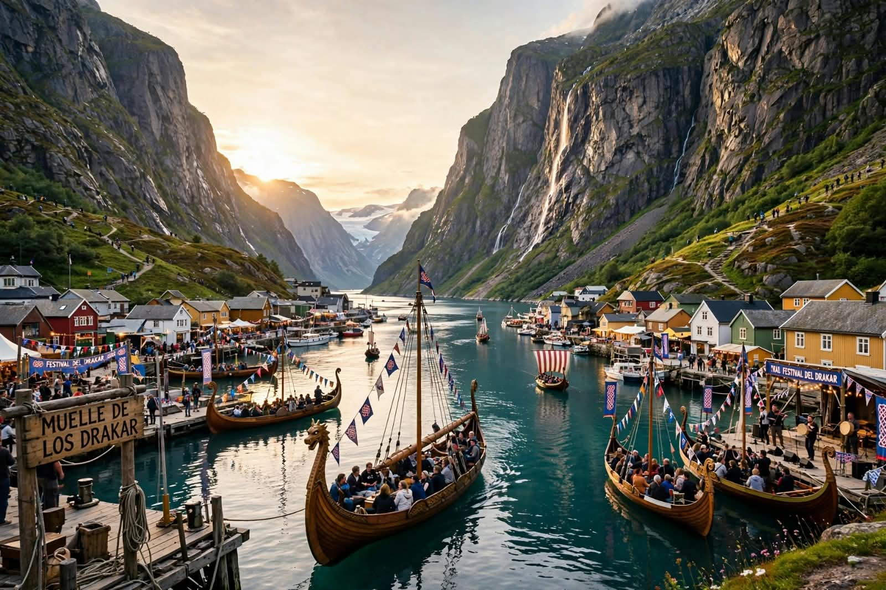
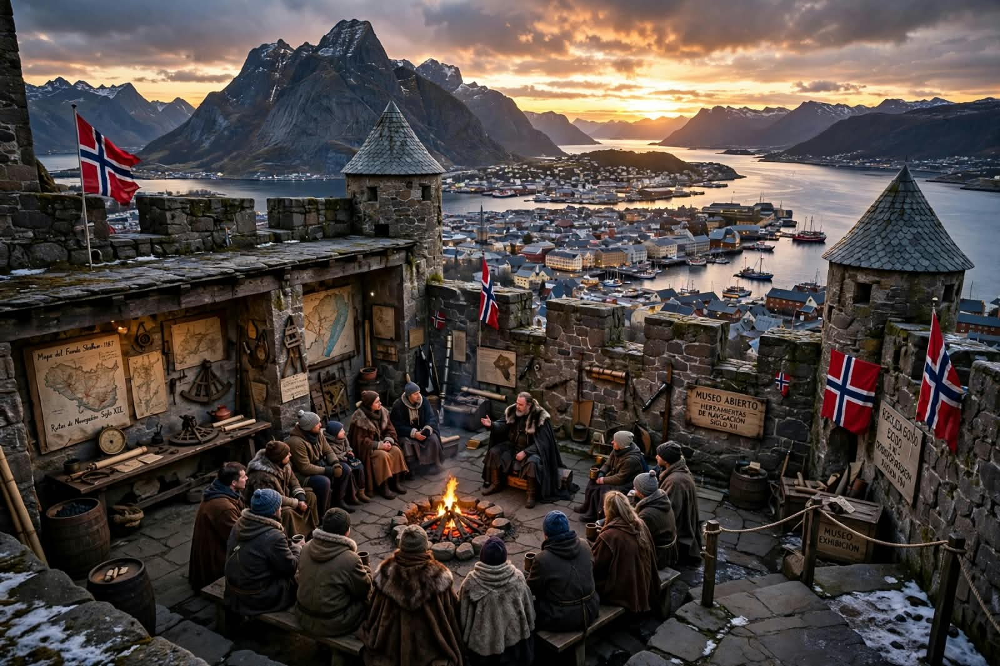

Mirador de las Auroras
Plataforma de observación construida en la cumbre de la montaña Koldfjell, a 420 m sobre el nivel del fiordo. Es el punto más alto accesible a pie desde el centro de la ciudad y el mejor lugar de Skodheim para ver la aurora boreal. Se ubica en la cumbre de la montaña Koldfjell, al norte del centro histórico.
Es la experiencia más icónica de Skodheim. Durante las noches polares de invierno, la aurora se ve con una intensidad que pocos lugares del mundo ofrecen.
- Observar las auroras boreales
- Fotografear el cielo y el reflejo en el fiordo.
- Participar en las "Noches de Observación", eventos guiados por astrónomos locales que se realizan los viernes de noviembre a enero.
Fiordo de Skodheim
Cuerpo de agua glacial de 12 km de largo que atraviesa la ciudad de punta a punta. Sus paredes rocosas de hasta 800 m y sus aguas turquesas lo convierten en uno de los paisajes más fotografiados del norte de Noruega. Se ubica cruzando toda la ciudad de oeste a este. El punto de partida de los paseos es el Muelle de los Drakar, en la zona portuaria.

Se recomienda porque es el paisaje que define la identidad de Skodheim. El paseo en drakar permite ver la ciudad desde el agua, algo que no se puede hacer desde tierra. ¿Quieres experimentar como era viajar en los fiordos durante la epoca vikinga? Sigue el recorrido de nuestra experiencia turisticas:
- Reunete con la tripulacion en el antiguo puerto
- Preparar el drakar para el viaje cargando provisiones
- Consulta las runas antes de emprender el viaje
- Abandona el puerto adentrandote en los fiordos
- Rema por la costa y navega hacia mar abierto
- Explora las cuevas y escondites naturales
- Observa la fauna marina en su hábitat natural
- Regresa al puerto y comparte historias de la travesía
Fortaleza del Escudo
Fortaleza medieval del siglo XII construida para defender la ciudad de invasiones por mar. Hoy funciona como museo abierto al público y mirador panorámico. En su interior se conservan mapas antiguos, herramientas de navegación, vestimentas tradicionales, artesanía local y restos arqueológicos de la zona. Se ubica en la base de la montaña Skjoldberg, al sur del centro.

Es muy recomendable porque es el único lugar donde se puede conocer la historia y las leyendas de Skodheim de primera mano. El mirador ofrece la mejor vista panorámica de toda la ciudad. Tiene actividades interesantes como:
- Recorrer el museo y la sala de leyendas nórdicas.
- Subir al mirador superior para ver toda la ciudad y el fiordo.
- Asistir a las "Noches de Leyendas", evento mensual donde un contador de historias cuenta mitos nórdicos junto a una fogata.